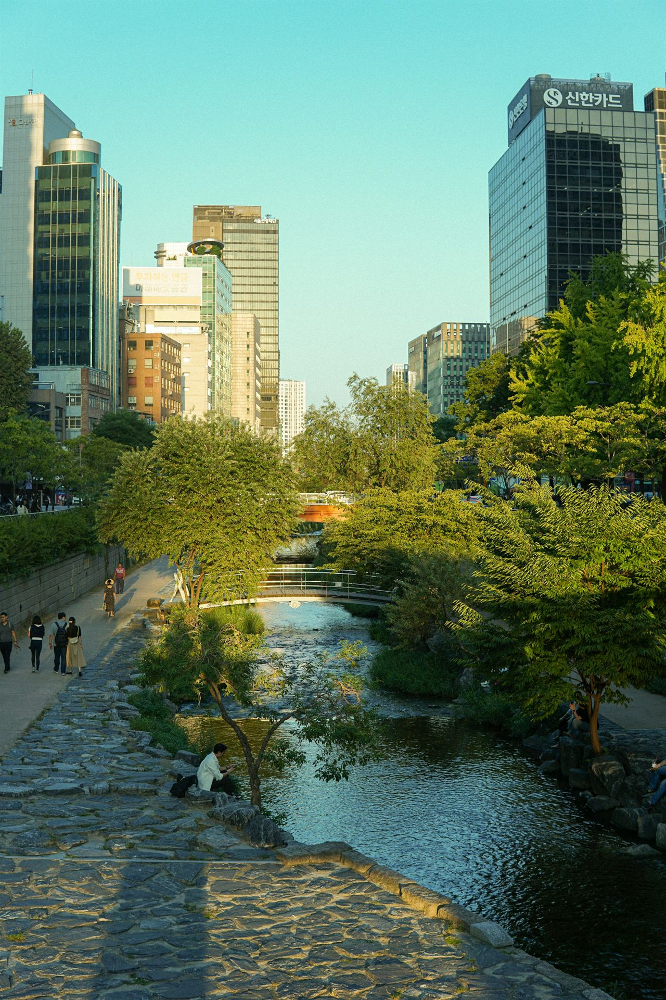
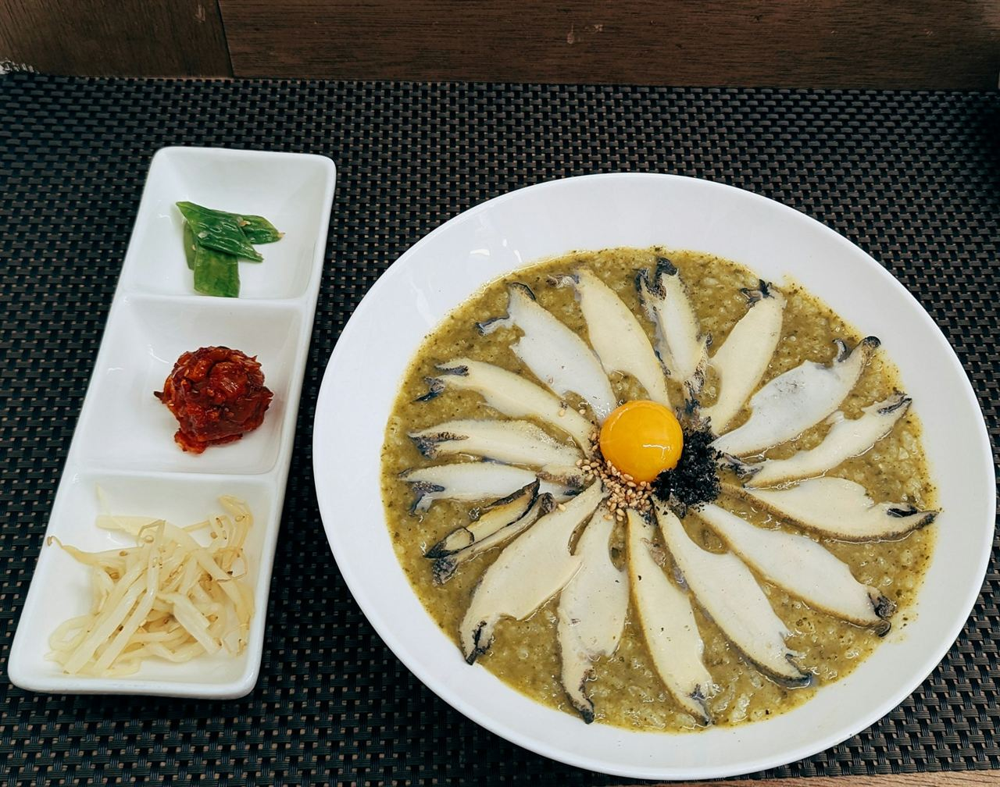
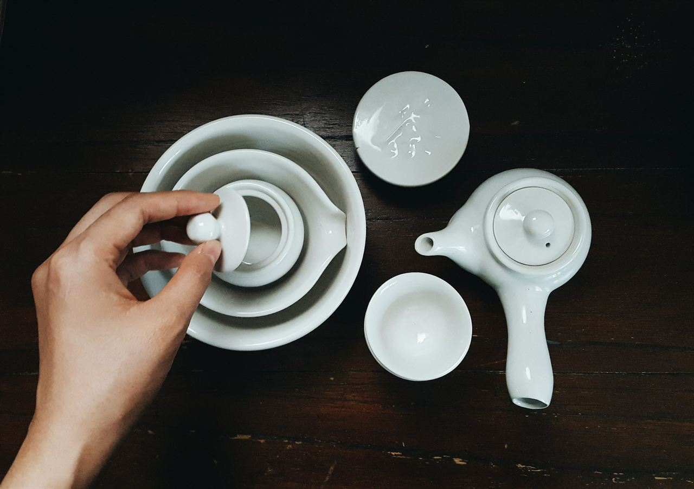

Sunday
9:00 pm
The last meal, then water only.
Fasting starts the evening before, usually around nine; your hospital sets the exact time. An early, simple dinner near the hotel, a short walk along the stream, and bed.

Destinations · Seoul, South Korea
Most of a checkup here is finished before lunch. This is a typical morning, hour by hour, and the quiet day that follows.
Right now in Seoul
–
Sunrise – · Sunset –
Seoul at dawn · Photo: Emanuel Ekström
From $610
University-hospital checkup packages. Third-party guide, July 2026.
12–16 h
Nonstop from major US hubs.
Level 1
US travel advisory: exercise normal precautions.
No visa
For US visitors. The K-ETA travel permit is waived until 31 December 2026; check before later trips.
Read the full Seoul guideThe word
건강검진
geon-gang geom-jin · a health examination
Koreans grow up with the word. The national health insurer invites adults for a general checkup every two years, and many employers add more. Hospitals here have spent decades turning a long list of tests into one calm morning.
Hour by hour
Times are typical of a university-hospital checkup center. Yours will be set by your hospital; ask it to confirm them in writing before you fly.
Sunday
9:00 pm
Fasting starts the evening before, usually around nine; your hospital sets the exact time. An early, simple dinner near the hotel, a short walk along the stream, and bed.
Monday
6:40 am
Down by Cheonggyecheon, the stream that runs through downtown below street level, the paths are nearly empty: a few joggers, a heron, the sound of water. You have nothing to carry and nowhere to be until half past seven.

Monday
7:30 am
At the checkup center you change into its gown and slippers, the same as everyone else, and lock your things away. Your coordinator meets you here and stays with you all morning.

Monday
8–11 am
The stations sit close together: blood and urine, ultrasound, chest X-ray, eyes and hearing, and, if you chose it, an endoscopy under light sedation. You move from room to room, and the waits are short.

Monday
11:40 am
A doctor goes over the results that are ready the same day. Everything else arrives in your signed English report, with your scan files.

Monday, 12:15 pm
전복죽jeonbok-juk, abalone porridge
The gentle meal Koreans reach for after an endoscopy or a long illness. Soft, warm, faintly of the sea; the green comes from the abalone itself.
After a night and a morning of fasting, it may be the best bowl of anything you eat all year.
Monday
Afternoon
Sedation lingers for a few hours, so the rest of the day is for doing very little. A teahouse in Insadong or Ikseon-dong is the right speed.
If you want one thing to bring home, make it a small white porcelain cup. Korean potters have made them since the Joseon era.

Good to know
Everyone wears the same gown.
Executives, students, grandmothers: all in matching gowns and slippers. It is oddly calming.
Ppalli-ppalli, “quickly, quickly.”
A national habit. In a checkup center it means short waits, not rushed care.
Sedated endoscopy is routine.
Light sedation is common. Afterwards, no driving and no important decisions for the rest of the day.
Barley tea comes without asking.
Many restaurants pour roasted barley tea or water the moment you sit down. Refills are free.
No tipping.
Service is included in the price. A sincere thank-you is enough.
Bukchon keeps hours.
People live in the old hanok lanes, so the core streets are open to visitors from 10 am to 5 pm, a rule enforced since 2025.
Say it once
Everyone at the center will speak to you in English. These are for the taxi, the teahouse and the nurse who asks how you feel.
안녕하세요
annyeong-haseyo
Hello
감사합니다
gamsa-hamnida
Thank you
괜찮아요
gwaenchanayo
I’m fine, it’s okay
화장실 어디예요?
hwajangsil eodiyeyo?
Where is the restroom?

Tuesday · The day after
Behind Changdeokgung Palace lies a royal garden of ponds and pavilions, kept close to how the kings left it. You enter only with a guided tour, in timed groups, and the palace closes on Mondays: one more reason it belongs to the day after your checkup.
Gwangjang Market at lunch
Mung-bean pancakes, fried to order at the counter.
Bukchon, between 10 and 5
The hanok lanes, during visiting hours.
Namsan at dusk
The cable car or a gentle climb, for the city as the lights come on.
Suggestions only. We don’t sell tours, and we earn nothing from them.
Tell us when you can travel and what you want from a checkup. We will write back personally.
Plan a checkup